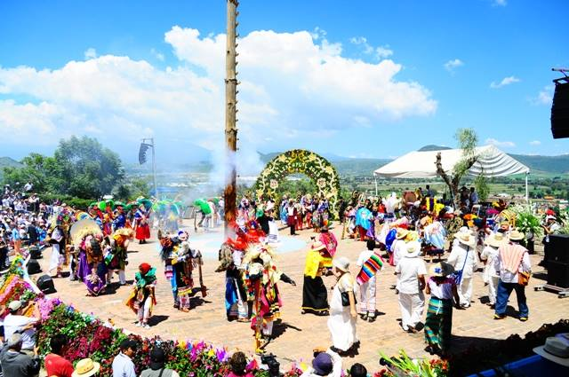

Atlixcáyotl
Es un festival cultural que se realiza en el cerro de San Miguel, en la parte conocida como Netotiloyan(Cerro de la danza), el último domingo de septiembre de cada año. El nombre de este festejo que se celebra en torno a la fiesta de San Miguel Arcángel es de origen náhuatl y quiere decir Gran Fiesta de Atlixco. Pero traducido por las raíces de la lengua náhuatl el sufijo "Yotl" más Atlixco se traduce como "Atlixquedad".
Entre otras cosas, en el Huey Atlixcáyotl se elige a la Xochicíhuatl (Mujer Flor) y a sus Xochipilme (Florecitas), que presiden las celebraciones. No se trata de un concurso de belleza, sino de una elección que se realiza sobre el conocimiento demostrado de las costumbres de los pueblos del estado. Cada región envía una representante para la elección de la Xochicíhuatl. donde las personas van a ser cualquier cosa como celebrar o resar.

Villa Iluminada
Heroica Atlixco también conocido como «Atlixco de las flores», es un municipio que se localiza al suroeste de la Ciudad de Puebla. Recibió su título de «Heroica»9 debido a la Batalla del 4 de mayo de 1862 que precedería a la Batalla de Puebla del 5 de mayo de 1862.


Alfombras de Flores
Esta es una actividad que se realliza en el zocalo de Atlixco cada vez que se hacerca una festividad como lo puede ser: navidad, dia de muertos, semana santa, entre otros.


 2
2 5
5 6
6 7
7